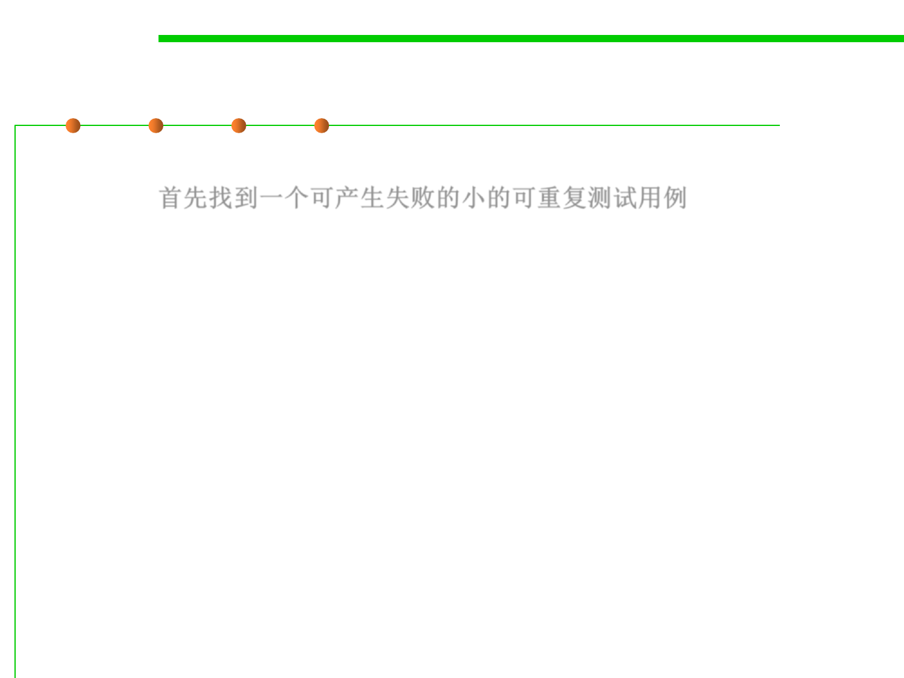

Reproduce the Bug
7.4 Debugging
▪ Start by finding a small, repeatable test case that produces the
failure. 首先找到一个可产生失败的小的可重复测试用例。
▪ If the bug was found by regression testing, then you’re in luck; you
already have a failing test case in your test suite.
▪ If the bug was reported by a user, it may take some effort to
reproduce the bug.
▪ For graphical user interfaces and multithreaded programs, a bug
may be hard to reproduce consistently if it depends on timing of
events or thread execution. (to be discussed in Chapter 10)